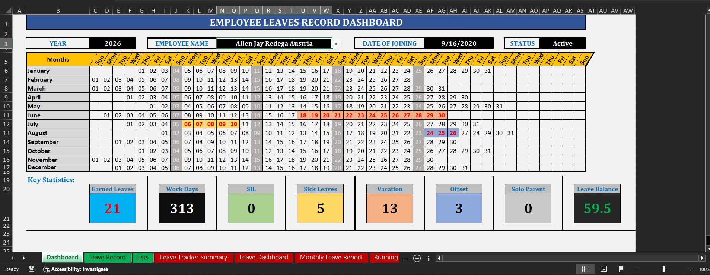
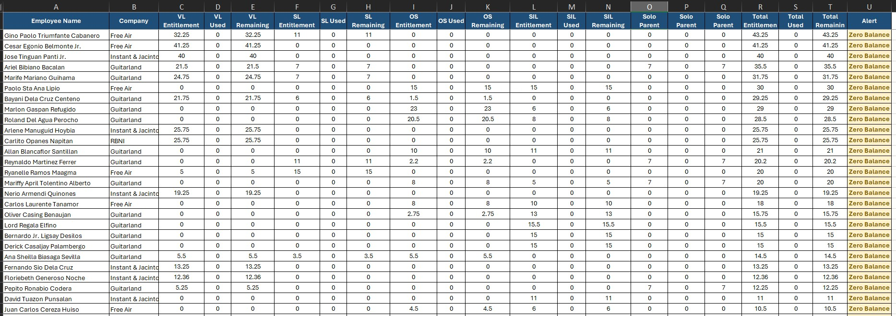
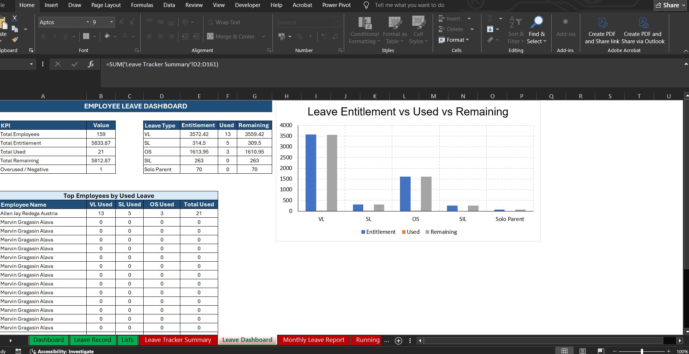

Employee Leave Management System
Built an Excel-based leave tracking system with employee records, leave type monitoring, monthly reports, employee selection, leave calendar, KPI cards, charts, and remaining balance calculation.
- Automated leave balance and used leave tracking
- Monthly report by leave type
- Dashboard with charts and key statistics


